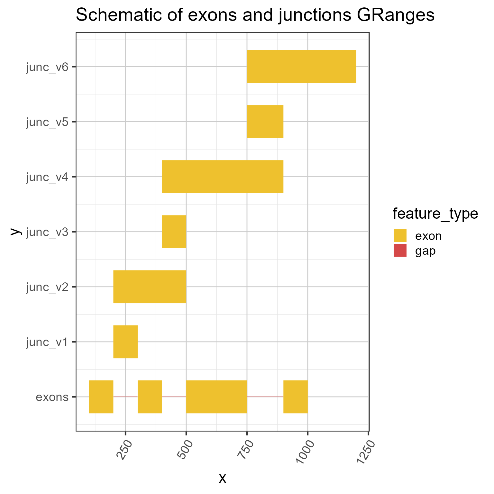
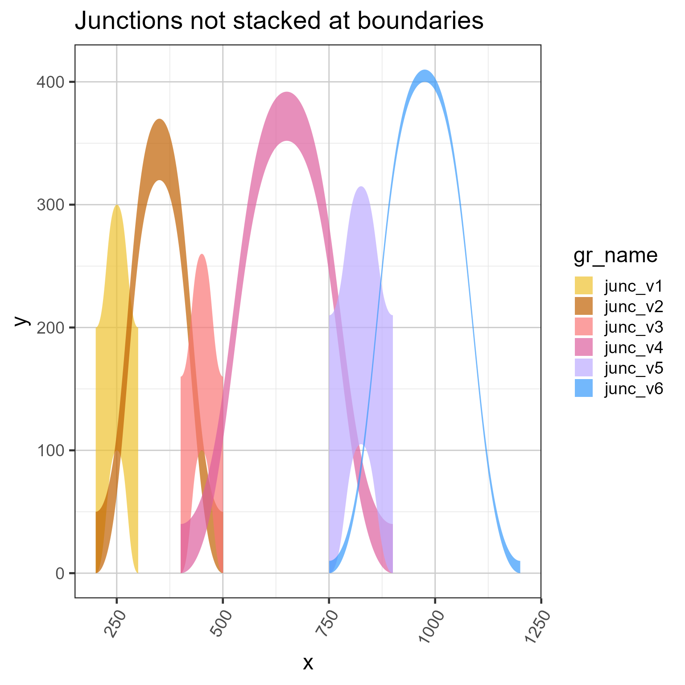
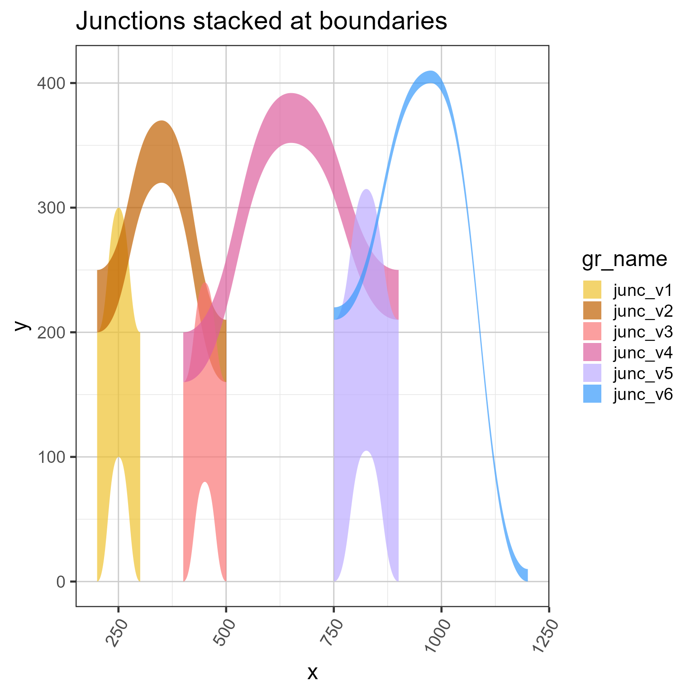
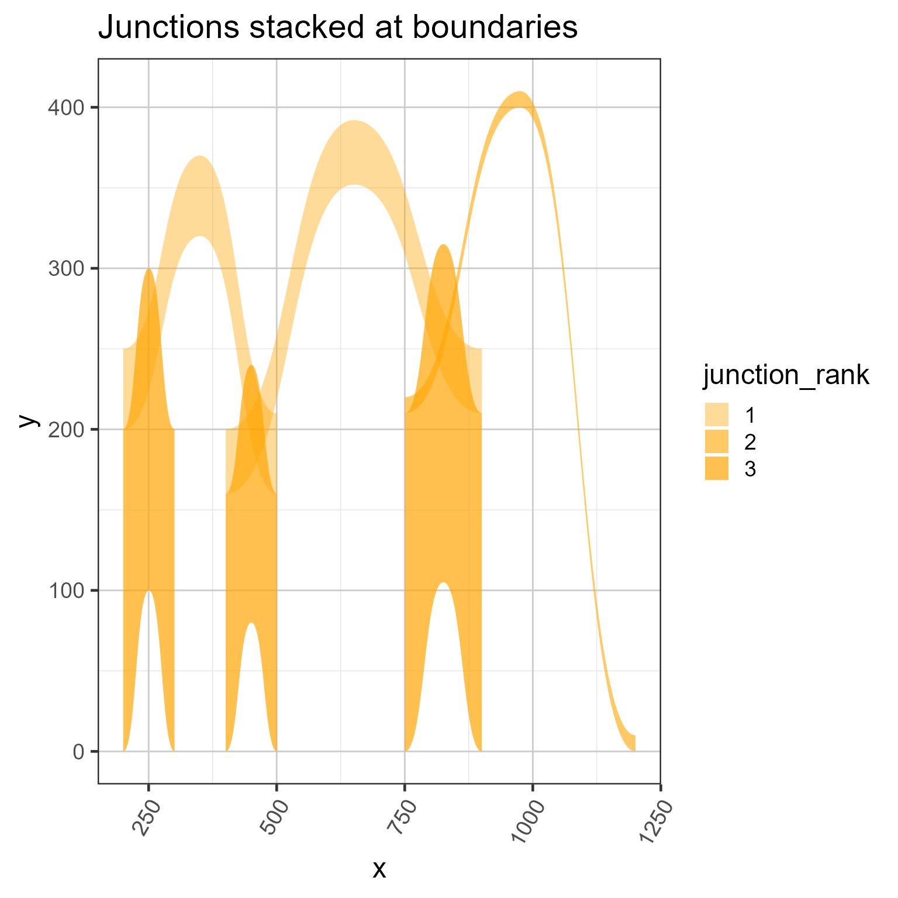
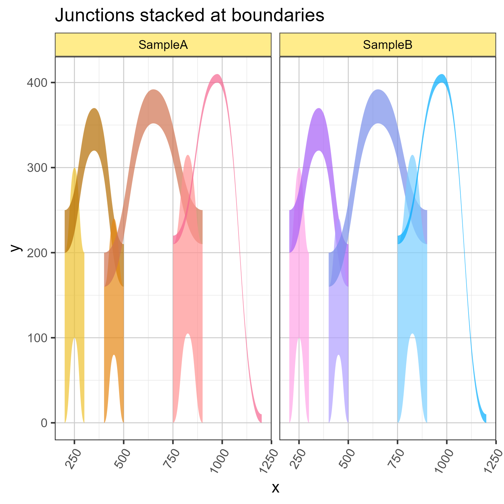

Stack the y-axis position of junctions
Usage
stackJunctions(
gr,
scoreColname = "score",
sampleColname = "sample_id",
scoreFactor = 1,
matchFrom = NULL,
matchTo = NULL,
strandedScore = TRUE,
baseline = NULL,
verbose = FALSE,
...
)Arguments
- gr
GRanges object representing splice junctions.
- scoreColname
character string matching one of
colnames(GenomicRanges::values(gr))that contains a numeric value representing the abundance of each splice junction observed.- sampleColname
character string with the column or columns that contain biological sample identifier, used to ensure junctions are only stacked within a sample, and not across samples. When
sampleColnameisNULL, all junctions are stacked.- scoreFactor
numeric value multiplied by the value in
scoreColnameto allow scaling the junctions across samples. Note thatscoreFactorcan be a vector, which would be applied to the vector of scores.- matchFrom, matchTo
optional colnames to use when grouping junctions at the start and end positions. By default
"nameFrom"and"nameTo"are used, as output fromclosestExonToJunctions(), which has the benefit of grouping junctions within thespliceBufferdistance from exon boundaries. If those values are not presentcolnames(GenomicRanges::values(gr))then the new defaultc("seqnames", "start", "strand")is used formatchFrom, andc("seqnames", "end", "strand")is used formatchTo. That said, ifmatchFromormatchToare supplied, those colnames are used fromas.data.frame(gr). Multiple colnames are allowed. Note also thatsampleColnameis appended tomatchFromandmatchToto ensure that matching is only performed within eachsampleColnamevalue.- strandedScore
logical indicating whether to enforce negative scores for junctions on the
"-"strand. Note that whenstrandedScoreis true, all"-"strand scores will be negative, and all other scores with be positive.- baseline
numeric vector of length 0, 1 or
length(gr), with values added to the y-axis value for junctions. Ifbaselinehas names matchingnames(gr)they will be used for eachgrentry; ifbaselineis not named, values are recycled tolength(gr). The purpose is to allow exons to be shifted up or down on the y-axis, along with associated junctions and coverage data (seeexoncov2polygon()for another example.)- verbose
logical indicating whether to print verbose output.
- ...
additional arguments are ignored.
Value
GRanges with colnames c("yStart", "yEnd") added
to values(gr), indicating the baseline y-axis position
for the start and end of the junction arc. The score
values(gr)[[scoreColname]] will reflect the adjustments
by scoreFactor, and if strandedScore=TRUE then all
strand "-" scores will be negative, all other scores
will be positive.
Details
This function is intended to help visualize splice junctions
specifically when plotted using geom_diagonal_wide_arc(),
where the height of the junction arc is defined by the score.
When two junctions have the same start position, their y-positions
are stacked, such that the shorter junction width is placed before
longer junction widths. The intention is to reduce visible overlaps.
The input data is expected to have annotations similar to
those provided by closestExonToJunctions(), specifically
the columns "nameFrom" and "nameTo", see examples below.
When the input data does not contain columns "nameFrom" and
and "nameTo", the junctions are by default stacked by
coordinates.
See also
Other Internal utility functions:
combineGRcoverage(),
compressPolygonM(),
df2colorSub(),
dfWide2segments(),
escapeWhitespaceRegexp(),
factor2label(),
geomean(),
intercalate(),
internal_junc_score(),
jamGeomean(),
list2im(),
shrinkMatrix(),
simplifyXY(),
strsplitOrdered()
Examples
library(GenomicRanges);
library(ggplot2);
library(ggforce);
library(colorjam);
library(jamba);
grExons <- GRanges(seqnames=rep("chr1", 4),
ranges=IRanges::IRanges(
start=c(100, 300, 500, 900),
end=c(200, 400, 750, 1000)),
strand=rep("+", 4));
names(grExons) <- jamba::makeNames(rep("exon", length(grExons)),
suffix="");
grJunc <- GRanges(seqnames=rep("chr1", 6),
ranges=IRanges::IRanges(start=c(200, 200, 400, 400, 750, 750),
end=c(300, 500, 500, 900, 900, 1200)),
strand=rep("+", 6),
score=c(200, 50, 160, 40, 210, 10));
names(grJunc) <- jamba::makeNames(rep("junc", length(grJunc)));
# quick plot showing exons and junctions using rectangles
grl <- c(
GenomicRanges::GRangesList(exons=grExons),
split(grJunc, names(grJunc))
);
ggplot(grl2df(grl), aes(x=x, y=y, group=id, fill=feature_type)) +
ggforce::geom_shape() +
scale_y_continuous(breaks=seq_along(grl)-1, labels=names(grl)) +
colorjam::theme_jam() +
colorjam::scale_fill_jam() +
ggtitle("Schematic of exons and junctions GRanges");

# add annotation for closest known exon
grJunc <- closestExonToJunctions(grJunc, grExons, spliceBuffer=5)$spliceGRgene;
# The un-stacked junctions
grlJunc2df1 <- grl2df(grJunc,
shape="junction",
doStackJunctions=FALSE);
ggplot(grlJunc2df1, aes(x=x, y=y, group=gr_name, fill=gr_name)) +
geom_diagonal_wide_arc(alpha=0.7) +
colorjam::scale_fill_jam() +
colorjam::theme_jam() +
ggtitle("Junctions not stacked at boundaries")

# The stacked junctions
grJunc2 <- stackJunctions(grJunc);
grlJunc2df2 <- grl2df(grJunc2,
scoreArcMinimum=20,
shape="junction");
ggplot(grlJunc2df2, aes(x=x, y=y, group=gr_name, fill=gr_name)) +
geom_diagonal_wide_arc(alpha=0.7) +
colorjam::scale_fill_jam() +
colorjam::theme_jam() +
ggtitle("Junctions stacked at boundaries");

## Another view showing the junction_rank
## based upon max reads entering and exiting each exon edge
ggplot(grlJunc2df2, aes(x=x, y=y, group=gr_name)) +
geom_diagonal_wide_arc(aes(alpha=junction_rank), fill="orange") +
scale_alpha_manual(values=c(`1`=0.4, `2`=0.6, `3`=0.7)) +
colorjam::scale_fill_jam() +
colorjam::theme_jam() +
ggtitle("Junctions stacked at boundaries")

## Last example showing how two samples are kept separate
grJunc_samples <- c(grJunc, grJunc);
values(grJunc_samples)[,"sample_id"] <- rep(c("SampleA","SampleB"),
each=length(grJunc));
names(grJunc_samples) <- jamba::makeNames(GenomicRanges::values(grJunc_samples)[,"sample_id"]);
grlJunc2df_samples <- grl2df(grJunc_samples,
scoreArcMinimum=20,
shape="junction");
ggplot(grlJunc2df_samples, aes(x=x, y=y, group=gr_name, fill=gr_name)) +
geom_diagonal_wide_arc(alpha=0.7,
show.legend=FALSE) +
colorjam::scale_fill_jam() +
colorjam::theme_jam() +
ggtitle("Junctions stacked at boundaries") +
facet_wrap(~sample_id)
